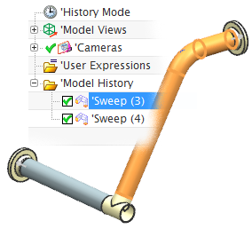
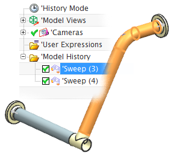

查看传统型材
-
注意到导航器中没有列出型材。

-
打开部件导航器
 。
。当前这个装配中的型材是通过两个扫掠特征来表示，如果您选择其中一个，对应的特征将会在图形窗口中高亮显示。

如果您想在您的材料清单中列出任何型材，那么您需要将部件中的扫掠特征转换为装配组件。
注意到导航器中没有列出型材。
打开部件导航器  。
。
当前这个装配中的型材是通过两个扫掠特征来表示，如果您选择其中一个，对应的特征将会在图形窗口中高亮显示。

如果您想在您的材料清单中列出任何型材，那么您需要将部件中的扫掠特征转换为装配组件。